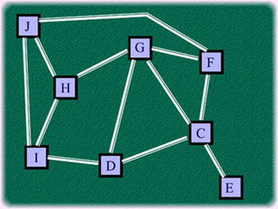

Problem G
The
Valentine's Day
Input: Standard Input
Output: Standard Output
As you all know that Valentine's Day is celebrated on
14th February each year. But sadly, this year in Bangladesh there
was Hartal (A sort of strike when motor vehicles sleep idle and people are
reluctant to go outside) on 14th February so people could not
celebrate it. Generally, the sale of flowers increases by ten times on this day
but this year the sale was almost unchanged and the flower shop owners were in
great pain. One of them said in frustration “I wish my flowers were all
vegetables so that I could eat them.” but as you all know this was not to be.
However, our problem is not related with this incident. Before stating the real
problem we should look at the following history of Valentine's Day:
Valentine's Day started in the time of the Roman Empire. Under
the rule of Emperor Claudius II, Rome was involved in many bloody and unpopular
military campaigns. Claudius the Cruel, as he was known at the time, was having
a difficult time getting soldiers to join his military leagues. He believed
that the reason was that roman men did not want to leave their loves or
families. As a result, Claudius cancelled all marriages and engagements in
Rome.
This was when a Christian priest named
Valentine came to defend love in the empire. Valentine began to secretly marry
couples despite the emperor's orders. When Emperor Claudius was informed of
these ceremonies Valentine was sent to prison where he remained until his death
on February 14 in 270 AD.
It wasn’t until a few hundred years later when
Valentine's Day began to develop, as we know it. At the time, Christianity was
beginning to take control of Europe. As part of this effort the Church sought
to do away with pagan holidays. Valentine's Day came to replace a mid-February
fertility festival called Lupercalia. In honor of his sacrifice for love
Valentine was made a saint and Lupercalia renamed in his honor. To be specific
we should assume in this problem that the celebration of Valentine's Day started
in 470 AD.
Our problem is on a newly married couple Marsha and Bill. Both of them are service holders and the property of their job is that in every new month they are transferred to a new city, which is adjacent to the previous one or remains in the old city. The probability of being transferred to any one of the adjacent cities or not being transferred is equal. That is if a city C has four neighboring cities D, E, F, G then his probability of being transferred to city D the next month is 1/5 = 0.20. The same probability is for being transferred to E, F and G or remaining in C. You will have to find out the probability of their being in the same city in the next available (yet to come) Valentine's Day celebration. In a city with no neighbors (no adjacent city) no transfer occurs.

Fig: A Map of Eight Cities
Input
The input will contain an integer N that indicates the
number of sets of input. Next there will be N sets of input.
Each set begins with three integers Y (460<=Y<=10000)
that is the initial year and M (1<=M<=12), which is the initial month.
And D (1<=D<=31) and no invalid dates. Next there will be one integers R
(R<=20) followed by R lines each containing two city names city1 and city2, which indicates that city1 and city2 are adjacent. If city1 and city2 are
equal ignore the input as we have said before that after the end of a month the
person may remain in his current city. There may be redundant inputs (the same
pair of info twice), ignore them also. Some city names may be absent in these R
lines of information but those cities are without neighbors. After these
relations there will be two city names city1 and city2, which are
the initial position of Marsha and Bill. City names will always be an uppercase
character (A...Z)
Output
For each set of input output in a single line the probability of their being in the same city (as stated before) on the next Valentine's Day. Output floats will have five digits after the decimal point.
Sample Input
1Sample Output
0.13076
__________________________________________________________________________________________
Shahriar Manzoor
"We more frequently fail to face the right problem than fail to solve
the problem we face."